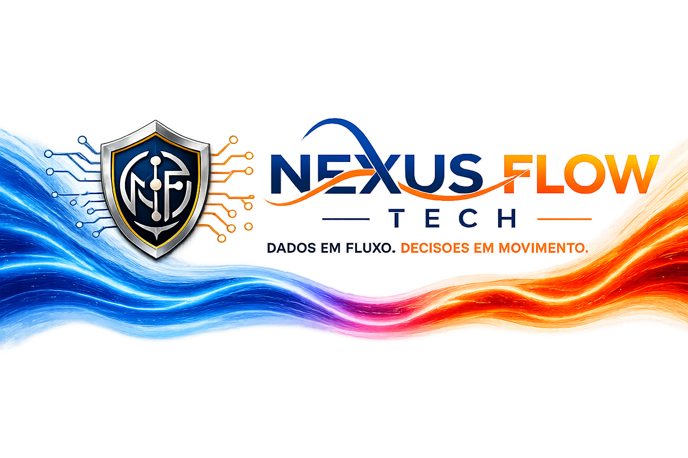

Dados conectados
Componentes com linguagem limpa, clara e tecnológica.
Exemplo de uso dos tokens e da identidade visual em uma seção hero do design system.

Componentes com linguagem limpa, clara e tecnológica.
Tipografia e cores com foco em contraste e hierarquia.
Uso do gradiente de fluxo e da onda da marca como recurso visual.